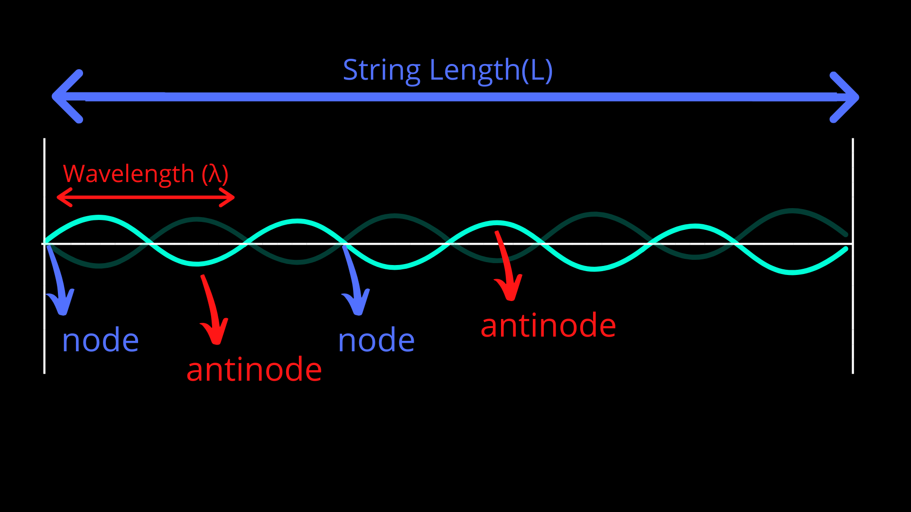
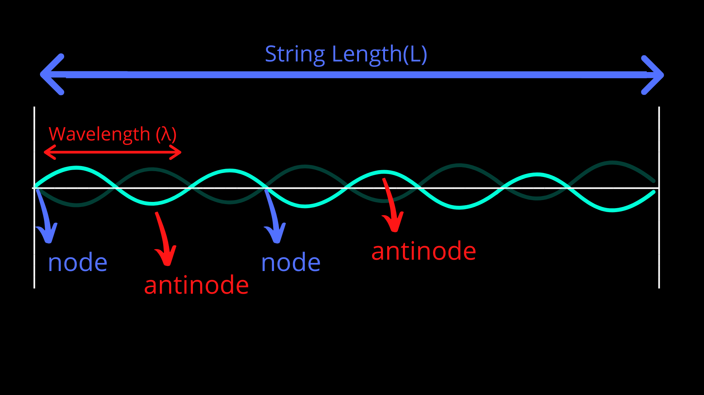

Physics of Guitar and Piano
 

There are three things guitar players do to change the pitch:
- 1-Change the string
- 2-Change the tension in the string
- 3-Change the location of the finger
The first two of these change the properties of the medium. As the speed of the sound depends on the properties of the medium, changing the string’s thickness or material, the speed of sound will change. According to this change in speed of sound, the frequency will change.
Increasing the tension will increase the speed of sound in that string, so the frequency of the string will get higher. The last one however, doesn’t change the properties of the medium. When you move your finger, pressing a point on the string, you create a node where you place your finger. This only changes the length of the string that will produce the sound. Therefore, the speed of sound will be constant; however, the wavelength will change. As frequency is inversely proportional to wavelength, an increase in string length will cause a decrease in frequency and a decrease in string length will cause an increase in frequency.
Piano, similarly works as guitar. However, a pianist cannot change the strings’ length, the string lengths corresponding every single note are already found in the piano. The job of a pianist is to cause a disturbance on these strings.
The interesting thing is that the string doesn’t only vibrate at its fundamental frequency; it also vibrates at its second, third, fourth, fifth harmonics and so on. Therefore, the note you hear is actually a combination of different frequencies. However, the dominant one is the first harmonic. This different harmonic produced by the instrument according to the reflection and interaction of the waves determine the unique sound of that instrument. This can be often referred to as timbre.
Everytime a note is played a node at the ends of the string is produced. at its first harmonic, there are only two nodes at the ends of the string. In this case the wavelength is equal to 2 times the length of the string. However, the second harmonic has totally three nodes, the third harmonic has four nodes and so on. In these cases the wavelength can be found as 2L/n, where L is the string length and n is the harmonic number. When this formula is plugged into the equation of speed of sound, the equation becomes f = nv / 2L . With this equation you find the frequency of the nth harmonic. As the fundamental frequency is v/ 2L, the frequency of the nth harmonic can be found by multiplying n by the fundamental frequency.